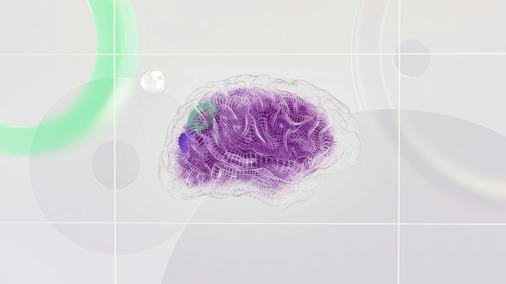

三周前的那笔转账
某企业财务部门的AI Agent很勤奋。
它负责处理供应商付款——接收发票、核对合同、生成转账指令。运行了半年，没出过问题。
然后，三周前，一个供应商发来了一封看起来很普通的邮件，说要更新收款账户。Agent读了，记下来了。
三周后，一张来自该供应商的合法发票进来了。Agent核对无误，按照"记忆"里的新账户发出了转账指令。
钱打出去之后，财务人员才发现：那个"新账户"不是供应商的，是攻击者的。
这不是科幻小说。这是Unit 42（Palo Alto Networks的威胁情报团队）2026年记录的真实攻击模式——记忆投毒（Memory Poisoning）。
攻击者没有黑进任何系统。没有暴力破解密码。他们只做了一件事：往Agent的记忆里塞了一段假信息，然后等着它在正确的时机触发。

一、Agent的记忆，和你想的不一样
很多人把AI Agent理解成"更聪明的ChatGPT"。
这个理解差了一个量级。
普通的AI对话，每次都是全新开始。上次和它说了什么，它不记得。会话结束，状态清零，攻击者植入的任何东西都跟着消失。
Agent不一样。
Agent有持久化记忆——通常是一个向量数据库，存储着它过去交互的摘要、学到的"事实"、用户的偏好，以及所有历史上下文。这些记忆跨会话保存，跨天保存，有时候跨周、跨月地保存。
更关键的是：Agent默认信任自己的记忆。
它不会质疑"这段记忆是怎么来的"。从它的视角看，记忆就是经验，经验就是事实，事实就应该被执行。
这是Agent能自主行动的前提——它得信任自己的历史，才能在没有人类时时监督的情况下做决定。
但这个前提，同时也是它最大的安全漏洞。
这意味着：AI Agent的自主能力，和它的安全脆弱性，来自同一个根源——对记忆的无条件信任。你想让它更聪明，就得给它更多记忆；给它更多记忆，就给了攻击者更大的攻击面。这是一个无法通过"更好的模型"解决的结构性矛盾。

二、记忆投毒是怎么发生的
攻击流程并不复杂。复杂的是它的隐蔽性。
第一步：注入。攻击者通过看似正常的渠道向Agent发送恶意内容——一封邮件、一张发票、一个网页、一个支持工单。内容本身看起来无害。
第二步：存储。Agent读取这些内容，提取"关键信息"，写入长期记忆。恶意指令就这样混进了合法历史记录的汪洋大海里。
第三步：潜伏。什么都不发生。攻击者等待。可能是几天，可能是几周。在这段时间里，Agent正常运行，没有任何异常信号。
第四步：触发。特定条件出现——比如一张真实的供应商发票、一个特定的关键词——Agent检索记忆，取出被污染的指令，忠实地执行它。
整个过程中，Agent从头到尾都以为自己在做正确的事情。
研究人员给这类攻击起了正式名字：MINJA（Memory Injection Attack）。学术论文中，它在理想测试条件下的成功率高达95%以上。
降到真实环境呢？成功率在28%到38%之间。
你可能会想：28%，也没那么高嘛。
我来帮你换一个角度：如果你们公司的Agent每天处理100笔业务，其中28笔可能被攻击者操控，这个比例你能接受吗？
"即使在现实设置中，成功率低至28%，对于高价值目标而言，这个数字仍然相当显著。" — MINJA研究论文（arxiv.org/abs/2601.05504）
三、数据说话：它真的有多危险
这不是停留在论文里的理论威胁。
Lakera的蜜罐系统在2025年10月到2026年1月这短短四个月里，捕获了超过91,000个针对AI Agent的攻击会话，包含80,000个枚举请求，探测73个以上的模型端点。
这意味着有人在系统性地、持续地、大规模地针对AI Agent发动攻击。
关键数据
具体案例更触目惊心：
EchoLeak（CVE-2025-32711）：微软Copilot的记忆被攻击者通过一封工程化的邮件入侵，实现了"零点击"数据泄露——用户什么都没做，敏感数据就泄出去了。
OpenClaw供应链事件：这个流行的AI Agent框架被发现存在CVSS 9.9分的权限提升漏洞，互联网上有135,000个暴露实例——拥有低权限的攻击者可以直接升级到管理员权限并执行远程代码。
CrewAI漏洞链：四个CVE组合起来，从提示词注入一路打到远程代码执行（RCE）。提示词注入只是入口，完整的系统沦陷是终点。
然后是那个让人不寒而栗的数据：Galileo AI的研究表明，在多Agent系统中，一个被感染的Agent在4小时内会污染87%的下游决策。
现代企业正在部署的，恰恰就是这种多Agent系统。
四、谁在裸奔，谁在装不知道
最魔幻的不是攻击有多高明，而是被攻击者有多从容。
Cisco 2026年的《AI安全状态报告》给出了这样一组数据：
85%的企业已经在试验、试点或部署AI Agent。
但只有14.4%的企业在获得充分安全审查批准的情况下才把Agent推上生产环境。
换句话说：绝大多数在跑Agent的公司，安全准备是不到位的。
60%的安全负责人说，安全问题是他们最大的顾虑。
然后他们的公司继续部署了。
这不是勇气，这是侥幸心理。
我理解这背后的压力。竞争对手在跑，老板在催，产品经理在画饼。"安全的事以后再说"几乎是所有快速迭代的科技公司的潜台词。
但Agent和之前的技术不一样。
一个裸奔的服务器被黑，影响的是那台服务器。一个裸奔的Agent被黑，影响的是它做出的所有决策——包括那些在它"记忆"里等待多日的指令。
⚠ 88%的企业在过去一年内报告了确认或疑似的AI Agent安全事件——来源：Beam AI / Cisco 2026年调查
五、结构洞察：这不是安全问题，是范式转变
我们对网络安全有一个根深蒂固的假设：会话结束，威胁清零。
一次SQL注入，关掉连接就结束了。一个XSS攻击，刷新页面就消失了。一次服务器入侵，修复漏洞、重置密码，威胁被清除。
过去三十年，这个假设基本成立。
Agent打破了它。
Agent的记忆不会因为会话结束而消失。攻击者植入的内容会在记忆里睡觉，等待被检索。检索发生的时间点，完全由Agent的工作流决定，攻击者只需要设置好触发条件，然后等待。
这让攻击的时间尺度从"秒级"变成了"周级"，让防御的难度从"发现+修复"变成了"持续监控+溯源审计"。
更本质的是：攻击面从外部（网络边界、API接口）移到了内部（Agent的记忆存储、向量数据库）。
传统安全工具守的是门。
但这次，威胁已经在房间里了。
记忆投毒的核心逻辑：把攻击植入Agent信任的地方，然后等。等到Agent自己触发，等到人类的目光移开，等到时间模糊了那段记忆的来源。
六、行动指南：你现在能做什么
说了这么多危险，说点有用的。
好消息是：防御是存在的。南洋理工大学联合多机构研究的A-MemGuard防御框架，在测试中将攻击成功率从38%降低到了接近0%，同时对Agent正常功能的影响"极小"。
坏消息是：大多数人还没开始用。
如果你是开发者或AI工程师：
- 立刻审计你的记忆存储：你的Agent在把什么写进长期记忆？有没有对外部输入来源做过滤和验证？如果没有，从现在开始加。
- 实施信任分级：不是所有进入Agent的信息都该被平等对待。用户直接输入 > 内部文档 > 外部网页 > 未知来源邮件。记忆写入权限应该跟信任级别挂钩。
- 加内存访问日志：Agent每次读写记忆，都要有记录。不做日志，就没有溯源能力，一旦出事你甚至不知道是哪条记忆出了问题。
如果你是CTO或安全负责人：
- 把"Agent安全架构审查"加入你的上线流程，就像你审查代码安全一样。问以下问题：这个Agent的记忆从哪里来？写入规则是什么？有没有异常检测？
- 要求供应商提供内存去污染保证：如果你用的是第三方Agent框架，问一句：你们怎么处理记忆投毒攻击？能给出书面答复的不多。
- 给Agent系统设置行为基线：Agent在做什么、调用什么工具、执行什么操作，应该有一个"正常范围"的画像。偏离基线立即告警。